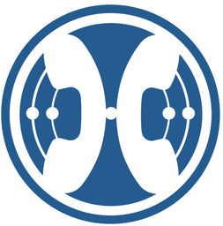

Episode 33 · Friday, October 9, 2026 · 4:00 PM ET / 20:00 UTC
Weekly Claw
Mistral previewed a 1T model; Reflection’s Beam is 501B, and both weights remain pending. OpenAI’s public math corpus has a correction trail. Windows and workplace agents are expanding. The debate: can open agents feel mainstream without giving up user control?
Hosts: @AndyML · @HiM
~37 min · three grids · one anchor · one debate
Sponsored by
 Herald Labs
Herald Labs

Heritage Telecom“Volume without verification.”